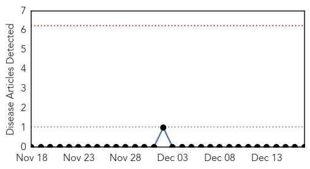
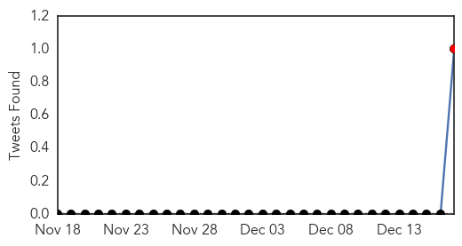

West Nile Virus
30-Day Web Trend
0 alerts, 0 warnings

30-Day Twitter Trend
1 alerts, 0 warnings

Article Locations


Article Confidences

Top Articles:
-
No articles found for Dec 17, 2014
Top Tweets:
- 0.585
- RT “@CIDRAP: New Saudi MERS cases; West Nile virus in Brazil; Avian flu in seals; Coronavirus in Iran camels http://t.co/NjbvovMqk9”
Unknown
30-Day Web Trend
0 alerts, 0 warnings

30-Day Twitter Trend
0 alerts, 0 warnings

Article Locations


Article Confidences

Top Articles:
- 0.996
- More than 100 students kept out of Long Island school amid flu outbreak
- 0.994
- Significant increase in number of flu cases in Arkansas
- 0.977
- Flu cases on upswing in North Alabama, statewide
- 0.917
- Chicago Tribune
- 0.917
- Chicago Tribune
- 0.917
- Chicago Tribune
- 0.917
- Chicago Tribune
- 0.917
- Chicago Tribune
- 0.917
- Chicago Tribune
- 0.917
- Chicago Tribune
- 0.917
- Chicago Tribune
- 0.917
- Chicago Tribune
- 0.917
- Chicago Tribune
- 0.917
- Chicago Tribune
- 0.917
- Chicago Tribune
- 0.917
- Chicago Tribune
- 0.917
- Chicago Tribune
- 0.917
- Chicago Tribune
- 0.917
- Chicago Tribune
- 0.917
- Chicago Tribune
- 0.910
- The world windows to Thailand
- 0.910
- The world windows to Thailand
- 0.910
- The world windows to Thailand
- 0.866
- Colombia's FARC rebels call indefinite ceasefire -statement
- 0.805
- Avian flu hits Chandigarh
- 0.799
- Dirty medical care blamed for Cambodian HIV outbreak
- 0.790
- Bird flu suspected in Scandinavian seal deaths
- 0.788
- S. Korea reports another case of foot-and-mouth disease
- 0.783
- Bird flu found in wild Whatcom County birds
- 0.782
- Assiut bird flu fatality raises 2014 death toll to 9
- 0.779
- Malaria Death Rates Drop Amid Fear of Drug Resistance, Articles
- 0.764
- Flu forces Georgia school district to close
- 0.763
- Bird Flu Scare in Chandigarh, Administration Resorts to Precautionary Measures
- 0.737
- Bacteria kills 1, makes 30 sick after Christmas supper
- 0.726
- Patients at Lok Nayak Hospital 'forced to buy their own medical equipment after chronic shortage'
- 0.678
- Duck sample tests positive in Chandigarh
- 0.677
- Fatal Case of Legionnaires' in Infant Following Water Birth
- 0.668
- Greek parliament fails to elect president in first round
- 0.614
- Multiple PED Outbreaks Likely to Impact Ukrainian Pork Production
- 0.596
- Fluoride risks whitewashed in rushed consultation
- 0.588
- Fluoride risks 'whitewashed in rushed MoH consultation'
- 0.587
- More Than 80 Cambodian Villagers Test Positive For HIV/AIDS
- 0.587
- More Than 80 Cambodian Villagers Test Positive For HIV/AIDS
- 0.587
- More Than 80 Cambodian Villagers Test Positive For HIV/AIDS
- 0.583
- Texas infant dies of Legionnaires' disease after 'water birth'
- 0.577
- Free flu shot clinic offered on Dec. 22 by Lebanon Family Health Services
- 0.566
- Sick Schools: Health officials weigh-in on Flu virus sweeping so
- 0.516
- Syphilis spikes among STDs in U.S.: study
Top Tweets:
-
No tweets found for Dec 17, 2014